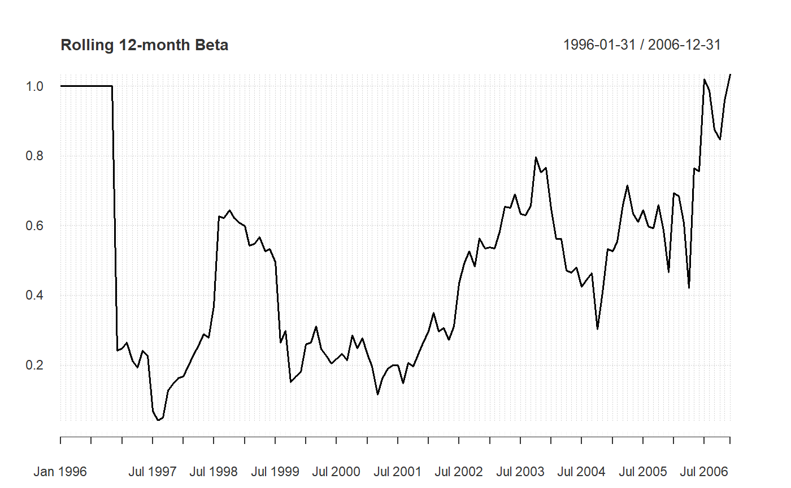
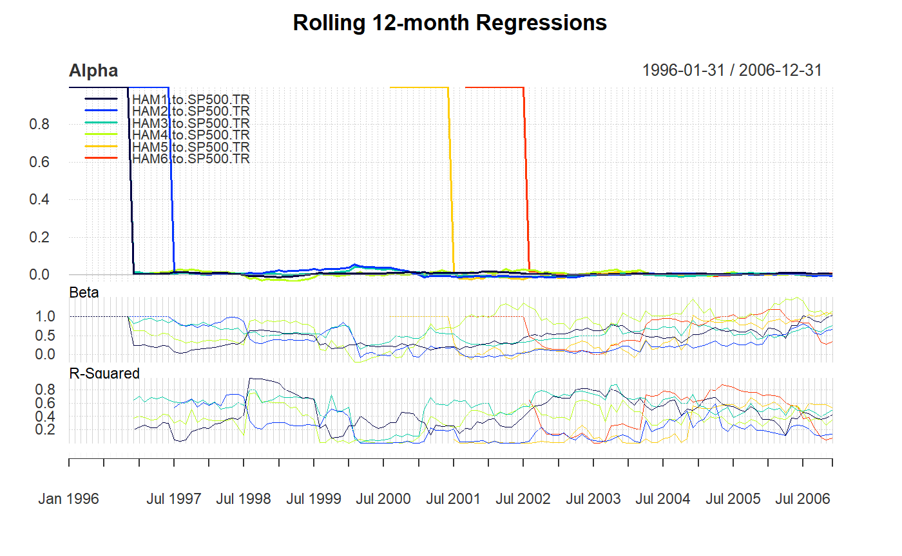

A wrapper to create a chart of relative regression performance through time
chart.RollingQuantileRegression(Ra, Rb, width = 12, Rf = 0, attribute = c("Beta", "Alpha", "R-Squared"), main = NULL, na.pad = TRUE, ...) chart.RollingRegression(Ra, Rb, width = 12, Rf = 0, attribute = c("Beta", "Alpha", "R-Squared"), main = NULL, na.pad = TRUE, ...) charts.RollingRegression(Ra, Rb, width = 12, Rf = 0, main = NULL, legend.loc = NULL, event.labels = NULL, ...)
| Ra | an xts, vector, matrix, data frame, timeSeries or zoo object of asset returns |
|---|---|
| Rb | return vector of the benchmark asset |
| width | number of periods to apply rolling function window over |
| Rf | risk free rate, in same period as your returns |
| attribute | one of "Beta","Alpha","R-Squared" for which attribute to show |
| main | set the chart title, same as in |
| na.pad | TRUE/FALSE If TRUE it adds any times that would not otherwise have been in the result with a value of NA. If FALSE those times are dropped. |
| … | any other passthru parameters to |
| legend.loc | used to set the position of the legend |
| event.labels | if not null and event.lines is not null, this will apply a list of text labels to the vertical lines drawn |
A group of charts in charts.RollingRegression displays alpha, beta,
and R-squared estimates in three aligned charts in a single device.
The attribute parameter is probably the most confusing. In mathematical terms, the different choices yield the following:
Alpha - shows the y-intercept Beta - shows the slope of the regression
line R-Squared - shows the degree of fit of the regression to the data
chart.RollingQuantileRegression uses rq
rather than lm for the regression, and may be more
robust to outliers in the data.
Most inputs are the same as "plot" and are principally
included so that some sensible defaults could be set.
lm rq
# First we load the data data(managers) chart.RollingRegression(managers[, 1, drop=FALSE], managers[, 8, drop=FALSE], Rf = .04/12)charts.RollingRegression(managers[, 1:6], managers[, 8, drop=FALSE], Rf = .04/12, colorset = rich6equal, legend.loc="topleft")dev.new()#> NULLchart.RollingQuantileRegression(managers[, 1, drop=FALSE], managers[, 8, drop=FALSE], Rf = .04/12)#> Error in chart.RollingQuantileRegression(managers[, 1, drop = FALSE], managers[, 8, drop = FALSE], Rf = 0.04/12): package‘quantreg’is needed. Stopping# not implemented yet #charts.RollingQuantileRegression(managers[, 1:6], # managers[, 8, drop=FALSE], Rf = .04/12, # colorset = rich6equal, legend.loc="topleft")